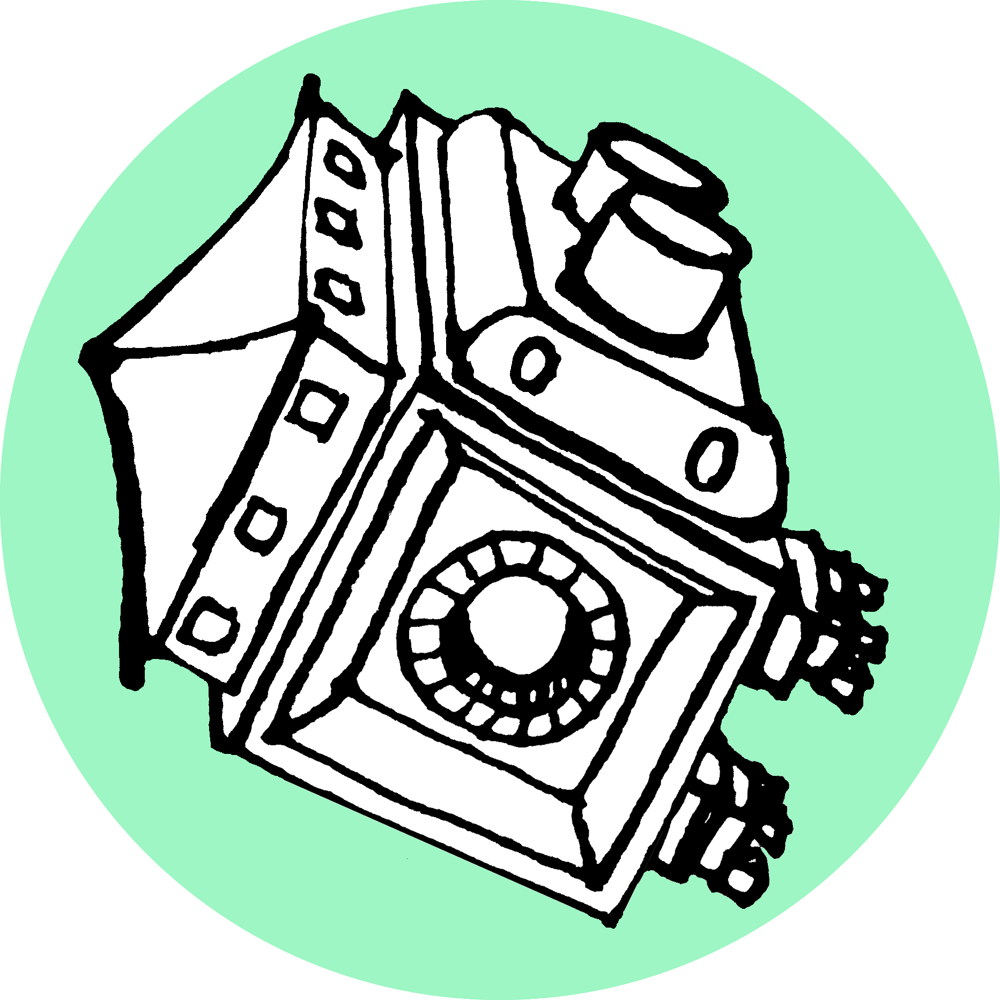

Nosink
Fast-paced arena platformer with shooter elements. (TEAM)
Read More
Dwarfnaut
I'm a recent Game Design graduate with a strong focus on level design and game design. I'm passionate about creating environments, lore, and immersive experiences.
My skillset is not limited to just game development. Learning, creating and my professional background have led me to gather experience and pick up techniques along the way which help me within gamedev. Click the skills below for more details and examples of my work.
Fast-paced arena platformer with shooter elements. (TEAM)
Read More
A sewer chaser game with multipurpose pills which both heal you and damage the ghost. (SOLO)
Read More
A gloomy tea kiosk generator with one thousand possible combinations. (SOLO)
Read More
Explore the social complexity of fridge's food pyramid and face the mold threat. (TEAM)
Read More
Escape the cottage as a tiny creature before the smoke causes you to perish. (TEAM)
Read More
Strategically plan your nap time while trying to reach the correct end station. (TEAM)
Read More
Try to drive back home with no headlights, relying on sound to avoid ditching. (DUO)
Read More
Survive the rat monster for as long as you can, while driving clients around in your rat taxi. (DUO)
Read More
Unsettling semi-PSX atmospheric short game about lemon orchards. (SOLO)
Read More
A short source-like puzzle game with dimension switching mechanic. (TEAM)
Read MoreHi! My name is Dominik Szczepaniak and I am a recent graduate of MSc. of Game Design at IT University of Copenhagen with a bachelor degree in Architectural Technology. What I value the most in games is immersion and aesthetic. I love to create worlds: lore, sketches, maps, 3D models and sculpts, ambiences, and any details that make those feel alive.
I learned a lot about teamwork and collaborative design during my Bachelor and Master's studies, as well as various game jams, but can also hold my own when it comes to solo development.
I have a passion for games with oldschool style, immersive first-person games, VR games, and many others. Some of my favorite titles are Half-Life: Alyx, TES III: Morrowind, Myst, Psychonauts, Neverhood, Amnesia, and Minecraft.